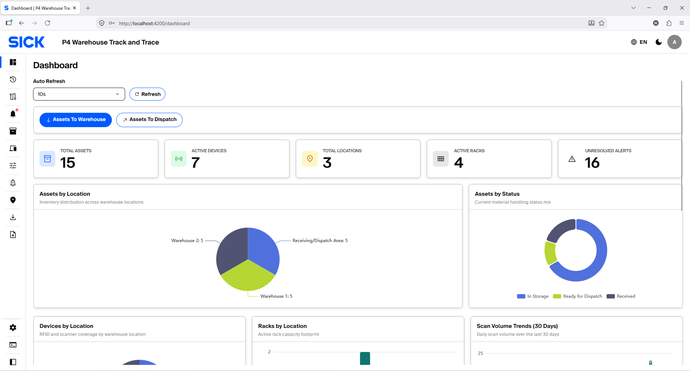
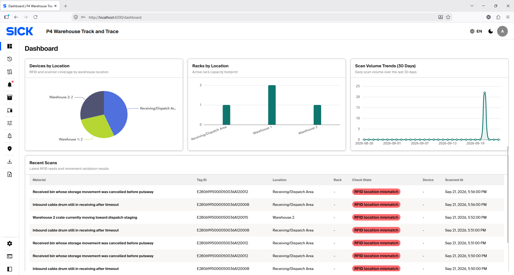
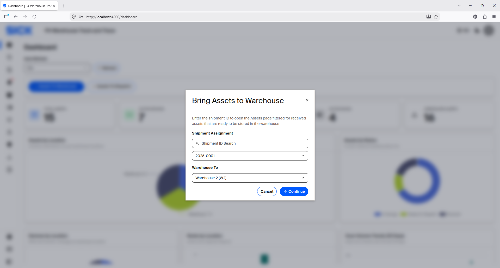
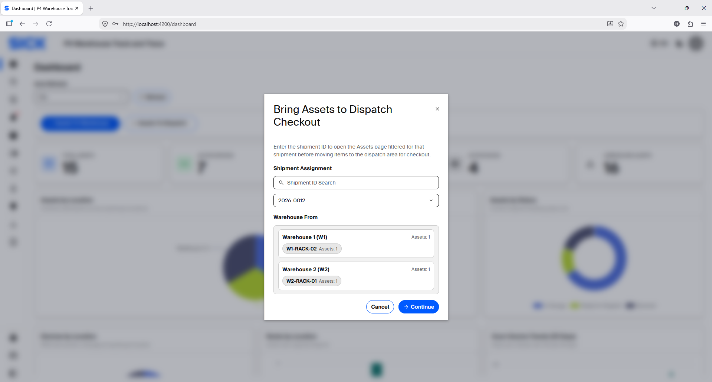

Dashboard & Movement Planning
Use the Dashboard to review operational summaries and create approved Storage or Dispatch movement requests.
Dashboard overview
The Dashboard combines inventory/device summaries, recent RFID activity and movement-planning actions.
Operational summary components
Use the summary sections to check system scope, Asset workflow state and recent RFID activity.
| Section | What it shows | How to use it |
|---|---|---|
| KPI cards | Total Assets, Total Devices/Scanners, Total Locations, Total Racks and Unresolved Alerts. | Use as a quick configuration and operational health summary. |
| Assets by Location | Asset distribution across configured Locations. | Check where inventory is concentrated or whether Assets appear in an unexpected area. |
| Assets by Status | Current Asset workflow-state distribution. | Review the balance of RECEIVED, IN_STORAGE, READY_FOR_DISPATCH and DISPATCHED Assets. |
| Devices by Location | Configured Device distribution across Locations. | Check expected device coverage at each operational area. |
| Racks by Location | Rack distribution across Locations. | Review storage footprint and investigate unexpected rack counts. |
| Scan Trends | Daily RFID scan activity for the most recent 30 days. | Identify periods with unusually low or high scan activity. |
| Recent Scans | Latest RFID records with Material, Tag ID, Location, Rack, Check State, Device and scan time. | Use for a quick trace before opening Scan Histories for deeper investigation. |


Create Storage movement requests
- Choose Assets To Warehouse.
- Select the Shipment ID.
- Select the destination Warehouse for the Storage movement.
- Continue. The system creates Pending records for eligible Assets and skips ineligible or already-planned Assets.
- Move the physical Assets through the expected source EXIT and destination ENTRY detection points.
- Open Asset Movements to monitor progress. Pending records can be edited before completion when the Edit action is available.


Create Dispatch movement requests
- Choose Assets To Dispatch.
- Select the Shipment ID.
- Review Warehouse From. It shows the current Warehouse(s), Rack(s) and Asset count(s) for the selected Shipment. It is read-only; you do not select a Warehouse here.
- Continue to create Pending records toward the configured Dispatch/Receiving area.
- Move the physical Assets through the expected Warehouse EXIT and Dispatch/Receiving ENTRY detection points.
- Open Asset Movements to monitor or adjust allowed values while the records are still Pending. After staging is complete, use the Dispatch Checkout application.


Pending requests remain adjustable Movement
planning creates Pending records. Before a physical movement
completes, open Asset Movements and use Edit to change only the
inputs that the current record allows. Read-only fields remain
locked. See Asset Movements.